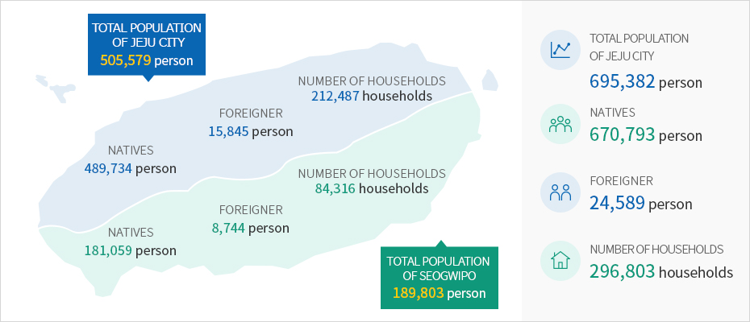

Population · Economic Growth · Industrial Structure
- Home
- General Status
- Administration · Economy
- Population · Economic Growth · Industrial Structure
Population
Jeju’s population status (as of May 2020)



Finance
- Budget : KRW 5,822.9 billion
- Financial independence rate : 32.9%
※ Source & relevant links : Jeju Special Self-Governing Province (http://www.jeju.go.kr/jejuwnh/unesco/triple.htm)
Industry
-
GRDP
KRW 18.227 trillion -
Per capita GRDP
KRW 28,52 million (per capita GDP: KRW 33.657 million) -
Economic growth rate
4.9% -
FDI
$ 300 million -
ourism revenue
KRW 5,571.8 billion -
Agriculture revenue
KRW 1,694.5 billion -
Tangerines
30,711 farms 631,000 tons in production -
Fishing
187,739 M/T in production KRW 1,211 billion in revenue -
Livestock
4,918 farms 2.416 million in breeding herds / KRW 992.5 billion in revenue -
Amount of exports
$ 1.82 million -
Number of registered vehicles
596,215 (1.32 per household) -
Housing distribution rate
107 % (266,425 units)
※ Source & relevant links : Jeju Special Self-Governing Province (http://www.jeju.go.kr/jejuwnh/unesco/triple.htm)
Infrastructure
-
Infrastructure
-
Passenger traffic(2019) : 29,455,305 persons
- Domestic line : 27,555,827persons
- International line : 1,899,478persons
-
Passenger traffic(2019) : 29,455,305 persons
-
Jeju Port / International Cruise Terminal
-
Passenger traffic(2019) : 1,345,802persons
- Domestic line : 1,324,099persons
- International line : 21,703persons
-
Passenger traffic(2019) : 1,345,802persons
-
331 Educational Institutions
- Universities (national universities, universities, community colleges)
- nternational schools 2
- International schools 4
- High schools 30
- Middle schools 45
- Elementary schools 113
- Kindergartens 123
- Branch schools 7
- Special-education schools 3
-
926 Medical Facilities
- General hospitals 6
- Hospitals 8
- Nursing hospitals 9
- Clinics 439
- Dental clinics 216
- Oriental medicine clinics 182
- Public health centers 6
- Branch offices of public health centers 11
- Health care centers 47
- Community Health Promotion Centers 2
-
Housing Distribution Rate – 105.2%
- Number of households: 24,215
- Number of residences: 252,644
-
1 Natural Recreation Forests
- Seogwipo Healing Forest
-
7 Natural Parks (361km2)
- Hallasan National Park
- Udo Provincial Marine Park
- Chuja Provincial Marine Park
- Seogwipo Provincial Marine Park
- Mara Provincial Marine Park
- Seongsanilchul Provincial Marine Park
- Jeju Gotjawal Provincial Park
-
4 Natural Recreation Forests
- Jeju Jeolmul Natural Recreation Forest
- Seogwipo Natural Recreation Forest
- Gyorae Natural Recreation Forest
- Bulgeun Oreum Natural Recreation Forest
-
Tourism Infrastructure
- 30 golf courses (33.6km2)
- 11 beaches
-
Educational Environment
- 4 international schools with approximately 3,900 students(as of 2019)
- KIS Jeju
- NLCS Jeju
- BHA
- SJA JEJU
- 4 international schools with approximately 3,900 students(as of 2019)